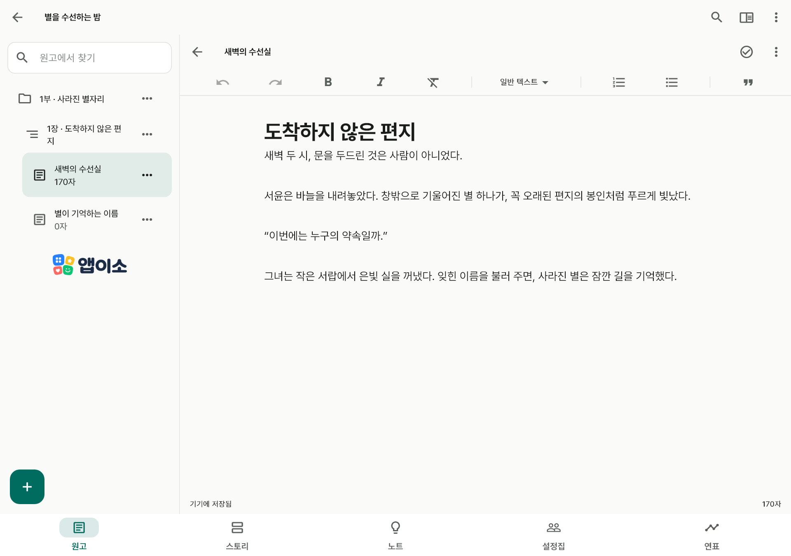

앱이소 글쓰기 · Android / Windows
한 문장부터,
한 권까지.
떠오른 장면부터 써 내려가세요.
원고와 인물, 아직 이름 없는 아이디어까지 한 작품 안에 모아요.

앱이소 글쓰기 · Android / Windows
떠오른 장면부터 써 내려가세요.
원고와 인물, 아직 이름 없는 아이디어까지 한 작품 안에 모아요.
부·장·장면 목차와 본문 제목을 오가며 긴 이야기를 나눠 써요. 글자 크기와 줄 간격도 편하게 맞춰요.
스토리보드로 장면의 흐름을 보고, 인물과 설정을 연결해요. 사건 연표는 이야기 속 시간으로 따로 정렬해요.
오프라인 자동 저장과 수정 이력, 작품 파일 백업을 제공해요. TXT·Markdown·Word로 원고를 꺼낼 수 있어요.
필요한 문맥만 요청문으로 복사해 사용하는 AI에 붙여 넣어요. 받은 결과는 원문과 비교하고 직접 적용해요.

선택적인 개인 Google Drive 동기화 코드를 준비했어요. 첫 설치용 빌드는 개발자 연결 설정과 실계정 검증 전이라 로컬 집필과 파일 백업을 사용할 수 있어요. Windows 실행 파일과 스토어 배포도 준비 중이에요.